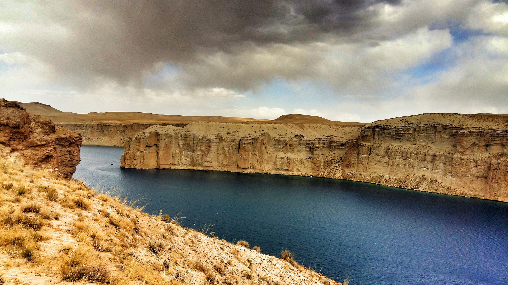
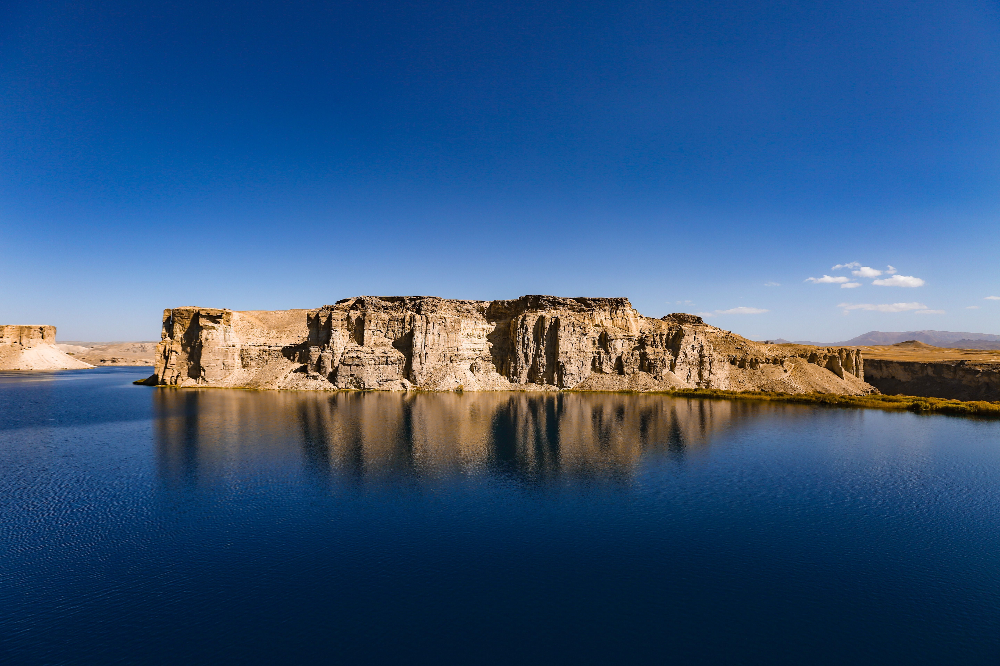

World Heritage
The Cultural Landscape and Archaeological Remains of the Bamiyan Valley is a UNESCO World Heritage property.

A remarkable valley known for its dramatic landscapes, archaeological heritage, and centuries of cultural history.
Bamyan is located in central Afghanistan and is surrounded by the dramatic mountains of the Hindu Kush. The valley has long been an important cultural and historical area.
Today, Bamyan is recognized for its archaeological remains, distinctive landscapes, and cultural heritage, making it one of Afghanistan's most significant destinations.

Bamyan is home to one of Afghanistan's most important archaeological and cultural landscapes.
The cliffs of Bamyan contain the remains of the monumental Buddha statues that were carved into the rock between the 3rd and 6th centuries. The statues were destroyed in 2001, while the surrounding archaeological landscape remains an important part of Afghanistan's heritage.
The Cultural Landscape and Archaeological Remains of the Bamiyan Valley was inscribed on the UNESCO World Heritage List in 2003.
Beyond its archaeological heritage, Bamyan is known for its striking natural environment. Mountain ranges, open valleys, and high-altitude landscapes create a distinctive setting.
The wider Bamyan region is also associated with Band-e Amir, a spectacular group of naturally formed lakes surrounded by rugged mountains.
Explore the valley.
Discover its heritage.
Experience its landscape.
A few important aspects that make Bamyan distinctive.
The Cultural Landscape and Archaeological Remains of the Bamiyan Valley is a UNESCO World Heritage property.
Bamyan has a long history connected with cultural exchange, Buddhist heritage, and ancient routes across the region.
The valley is surrounded by dramatic mountains and highland scenery characteristic of central Afghanistan.
The nearby Band-e Amir lakes are known for their striking blue waters and spectacular natural surroundings.
Explore Kabul, Herat, and other remarkable destinations across Afghanistan.
Back to Destinations →